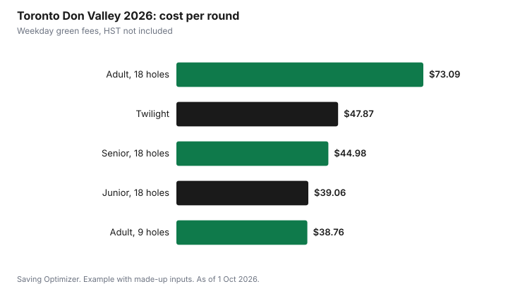

Sports · Canada
Golf Membership vs Green Fees: A Canadian Cost Guide
A golf membership pays off only if you play more rounds than the membership price divided by your usual green fee. At City of Toronto courses in 2026, for example, an adult weekday 18-hole round at Don Valley is $73.09 plus HST and a twilight round is $47.87. A $1,500 membership would need about 21 weekday rounds to beat paying green fees, or about 31 if you would otherwise play twilight. Toronto's junior membership, $377.99 plus HST, pays off after about 10 weekday junior rounds. Count the rounds you really played last year before you sign up.
Key takeaways
- Break-even rounds = membership price ÷ the green fee you would otherwise pay.
- Toronto 2026, Don Valley: adult 18 holes $73.09 weekdays, $81.90 weekends; twilight $47.87 weekdays.
- Toronto junior membership: $377.99 plus HST, about 10 weekday junior rounds to break even.
- Twilight and nine-hole rates cut the cost per round and raise the break-even for a membership.
- Early-bird membership deadlines can fall in winter; check your club's dates.
- Example with made-up inputs: 15 rounds cost $1,050 in green fees against a $1,500 membership.
Break-even
The math is the same everywhere. Divide the membership price, including any initiation, levies or food minimums, by the green fee you would otherwise pay. Then add the extras a membership may include, such as cart use, range balls or priority tee times, and the extras it does not, such as cart fees per round.
| Step | Formula |
|---|---|
| Total membership cost | Membership + initiation share + levies + minimums |
| Your usual green fee | Weekday, weekend or twilight, whichever you would really play |
| Break-even rounds | Total membership cost ÷ usual green fee |
| Adjust for extras | Subtract value of included carts or range balls you would buy anyway |
The rounds you would really play matter more than the rounds you hope to play. A busy season with rain, travel and family plans often means fewer rounds than expected.
Public course green fees
City-run courses publish their fees. Toronto operates five golf courses, and its Don Valley page lists 2026 green fees and rentals. The courses opened for the 2026 season on Friday, 10 April. Senior rates apply at 60 and older with ID, junior rates at 18 and under, and senior and junior rates are available after 12 p.m. on weekends and holidays. Nine-hole rates are available only early in the morning and at the end of the day.
| Golfer | Monday to Friday | Weekends and holidays |
|---|---|---|
| Adult, 18 holes | $73.09 | $81.90 |
| Senior, 18 holes | $44.98 | $54.24 |
| Junior, 18 holes | $39.06 | $46.61 |
| Adult, 9 holes | $38.76 | $47.87 |
| Twilight | $47.87 | $50.40 |
| Rental | 18 holes | 9 holes |
|---|---|---|
| Golf cart, per person | $25 | $19 |
| Clubs with pull cart | $35 | $25 |
| Pull cart only | $7 | $7 |
Toronto books tee times no more than seven days in advance online, by phone or at the pro shop. It also sells a junior membership for ages 9 to 18 at $377.99 plus HST, usable at all five City courses with tee time restrictions, which was sold out for 2026. At the weekday junior green fee of $39.06, that membership breaks even after about 9.7 rounds. Toronto's Welcome Policy subsidy can be used toward Junior Golf memberships for eligible families; see city recreation fee help.
Early-bird memberships
Some private and semi-private clubs renew memberships over the winter, and some offer an early-bird price or a payment plan for those who commit by a deadline. Ask each club for the deadline, what the membership includes, whether there is an initiation fee or capital levy, and any food and beverage minimum. Those extras can change the break-even more than the headline price.
| Question | Why it matters |
|---|---|
| Is there an early-bird deadline or payment plan? | Lower price or spread cost |
| Initiation fee or capital levy? | Adds to year-one cost |
| Food and beverage minimum? | Hidden yearly cost |
| Are carts or range balls included? | Value per round |
| Tee time restrictions? | Weekend access may be limited |
| Can you freeze or transfer? | Injury or a move |
Twilight rates
Twilight and nine-hole rates are the cheapest way to play often without a membership. At Don Valley, the weekday twilight rate is $47.87 against $73.09 for a full adult round, a saving of $25.22 a round. Toronto notes that tee time start times, including twilight, vary through the season and end at dusk. Someone who mostly plays twilight needs many more rounds to justify a membership.
Walking versus riding
Cart fees add up quickly for anyone paying per round. At Don Valley, a cart costs $25 per person for 18 holes, so a golfer who rides 15 times pays $375 in cart fees alone, about a quarter of the made-up membership price below. A pull cart costs $7. Walking is the single biggest saving for a fit golfer, and some memberships include carts, which changes the break-even. Toronto also expects each player to have their own set of clubs, and rents clubs with a pull cart for $35 for 18 holes, so a beginner can try the game before buying.
Rain checks and lost rounds
Weather matters for both choices. Toronto says rain checks are available if the course closes, if it has been raining for 30 minutes and the golfer chooses not to continue, if the greens have flooded or if there is lightning. A pay-as-you-go golfer can skip bad-weather days at no cost, while a member's cost per round rises with every lost day. Ask a club what happens to member tee times and guest passes on closed days.
Simulators
Winter is when some clubs renew memberships, and when golfers use simulators to stay sharp. Simulator venues usually charge by the bay hour; Birdie House in Ottawa, for example, lists $40 plus HST per hour from 1 November to 30 April. A membership that includes winter simulator time can tip the break-even. See indoor golf simulators.
Example with made-up inputs: an adult golfer
These numbers are an example with made-up inputs. They are not any club's prices. An adult considers a $1,500 membership. Last season they played 15 rounds: 10 weekday rounds at $75 and 5 twilight rounds at $50, a total of $1,000, plus $50 in cart fees on two rounds. Green fees cost $1,050. They would need about 20 weekday-equivalent rounds to break even, so paying as they go is cheaper unless they expect to play much more.
| Item | Pay as you go | Membership |
|---|---|---|
| Weekday rounds, 10 at $75 | $750 | Included |
| Twilight rounds, 5 at $50 | $250 | Included |
| Cart fees | $50 | Included |
| Membership | — | $1,500 |
| Total | $1,050 | $1,500 |

Choosing
- Count the rounds you played last season and when.
- Find your usual green fee: weekday, weekend or twilight.
- Get the full membership cost including extras.
- Divide to get break-even rounds.
- Check early-bird deadlines before deciding.
- Consider twilight, nine-hole and junior or senior rates as alternatives.
Sources
- City of Toronto, Don Valley Golf Course, toronto.ca, as of 1 Oct 2026. 2026 green fees, rentals, booking rules, season opening.
- City of Toronto, Golf, toronto.ca, as of 1 Oct 2026. Five City courses, junior membership price and rules, twilight timing, club rental expectation, rain check policy, Welcome Policy use.
- Birdie House, Hourly Rates, birdiehousegolf.ca, as of 1 Oct 2026. Winter simulator rate.
- The membership price, rounds and cart fees in the example are an example with made-up inputs.
Frequently asked questions
Is a golf membership worth it?
Only if you play more rounds than the membership price divided by your usual green fee. Include initiation fees, levies and food minimums in the membership cost.
How much are green fees at Toronto city courses?
At Don Valley in 2026, an adult 18-hole round is $73.09 on weekdays and $81.90 on weekends and holidays, and twilight is $47.87 or $50.40, all before HST.
How much is Toronto's junior golf membership?
$377.99 plus HST for ages 9 to 18, usable at all five City courses with tee time restrictions. It was sold out for 2026.
How can I golf for less without a membership?
Play twilight or nine-hole rounds, walk with a pull cart, use senior or junior rates where eligible, and book weekdays.
When do golf clubs sell memberships?
Some renew over the winter and offer early-bird prices or payment plans by a deadline. Ask each club for its dates.
Researched and drafted with AI assistance and fact-checked against official Canadian sources. How we create content.
Disclosure: Saving Optimizer has no affiliate relationship with the City of Toronto, Birdie House or any golf club. Education only.